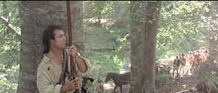

| Patriot,
The (SE)/B+,A |
| Columbia/2000/165/ANA
2.35 |
Thank God it's not a cross between Braveheart
and Independence Day, since from the scifi action team of Roland Emmerich and Dan Devlin, a
period picture starring Mel Gibson told in an epic tableau might qualify. The Patriot boasts
a solid script from Robert Rodat on which to hang the spectacular visuals. Special effects are used
to enhance the production, but it's mostly to make the battle scenes large enough in scope to
enfold the viewers in the rage of war.
While the questions of morality and philosophy may be laid out in simplistic
terms, the storyline of a family man swept in the storm of war is a time honored historical fiction
device. The Martin family of South Carolina is still suffering from the loss their mother, but
father Benjamin tries all the harder. A man respected by his fellow citizens, Martin is asked to
choose between family and war, and he chooses family, But sometimes our choices are made for us,
and it does not take long for Benjamin to be firing a musket and wielding a knife alongside other
battling Colonials.
 |
|
Waiting in ambush. ©Columbia |
Perhaps the emotional aspects of the film are less than
wholly satisfying, but director Roland Emmerich fills the big canvas admirably. The family scenes
are contrived and the romantic elements seem added by the numbers to satisfy a wider audience.
The battle scenes are the heart of The Patriot and small and large, they
are numerous. They are played out with visual power and rousing acting vigor. There's a huge amount
of historical detail to fill The Patriot canvas , and while some of it may be questionable,
you can't expect an entertaining film to be a slave to history. Actually, the absence of a
significant Southern slave presence is somewhat jarring and I wonder if there was ever a George
Washington proclamation decreeing slaves who fought for one year in the colonial army free men. The
production design paints a convincing picture and Caleb Deschanel's cinematography is simply
brilliant. John Williams break no new ground with an effectively lush
score.
Mel Gibson is at his best when he keeps the humor to a minimum. In The
Patriot, he's a good action hero, a solid father and the best-damned tomahawk thrower since
Chingachgook. I can understand the taste of death his Benjamin Martin must be tasting caught up in
yet another war. Gibson is comfortable showing his fragile side, but lets it all hang out when it
comes to revenge. Maybe Heath Ledger playing the pivotal role of Gibson's oldest son is a trifle
too clean cut for my taste. He could be a Barbie Patriot doll for all the depth of his emoting. But
he makes a sensible combination with pretty Lisa Brenner. Overall, the cast is solid, if a bit too
composed and balanced. Chris Cooper adds a fairly bland portrayal of American Colonel Harry Burwell
and Tom Wilkinson provides pure pleasure as Cornwallis. Jason Isaacs is a might too evil for my
taste as Tavington and Tcheky Karyo a might too French as Jean Villeneuve.
The Patriot is a smashing DVD. Detail is wonderfully clean with no enhancement
marring the image in almost every circumstance. The most difficult material comes across in flying
colors. Battle scenes designed with a multitude of detail and visual textures pose a major
challenge to DVD transfer strategists. The Patriot wins this battle hands down. Smoke mixes
with battle worn uniforms filling the frame with an impossible range of color that
is still accurately depicted. Along with the video, the sound is made of pure reference
stuff. The Dolby Digital 5:1 sound mix on The Patriot is brilliant. It could easily have
been overdone, but it is controlled for maximum effect. Tight bass canon explosions are coupled
with whizzing bullets and John Williams horns.
This is a fully packed special edition. The team of director Emmerich and
producer Devlin provide audio commentary. There are deleted scenes, three thematic featurettes,
conceptual art comparisons, and trailers. |
|
 
The American Widescreen Museum, is the ultimate resource for widescreen movie information, Martin
Hart's reliable site is a great tool for movie buffs.
Imaging Science Foundation
The Imaging Science Foundation promotes proper standards in home theater viewing. ISF trained
technicians offer monitor calibration services to consumers. The difference in a properly
calibrated monitor can be astounding. Click on the image to find an ISF member near you.

Cinemedia is
the largest film and media directory with over 25,000 links.

Cyber Theater is an outstanding source for accurate video information. Check out their 16 x 9
format guide for a thorough understanding of DVD encoded that way.

Selections from the feature archive include articles on Akira Kurosawa,
Frank Darabont, Blonde Bimbos, Hollywood
Street Gangs, or Vietnam:
The Hollywood Pariah, and many more...
A Western is a Western is a Western

Place or time it's still a Western from John Ford's Drums
Along the Mohawk to John Sturges' Bad Day at Black Rock.

The
Movie Poster Archive includes extensive poster images from the films of stars like Susan Hayward,
Kirk Douglas, Katharine Hepburn and many more. Our featured star is Errol
Flynn.
|